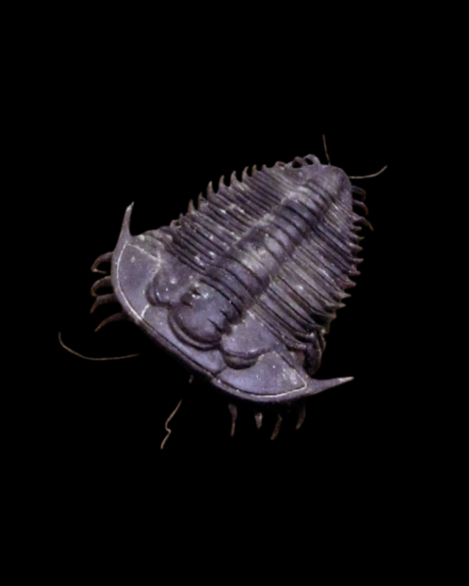
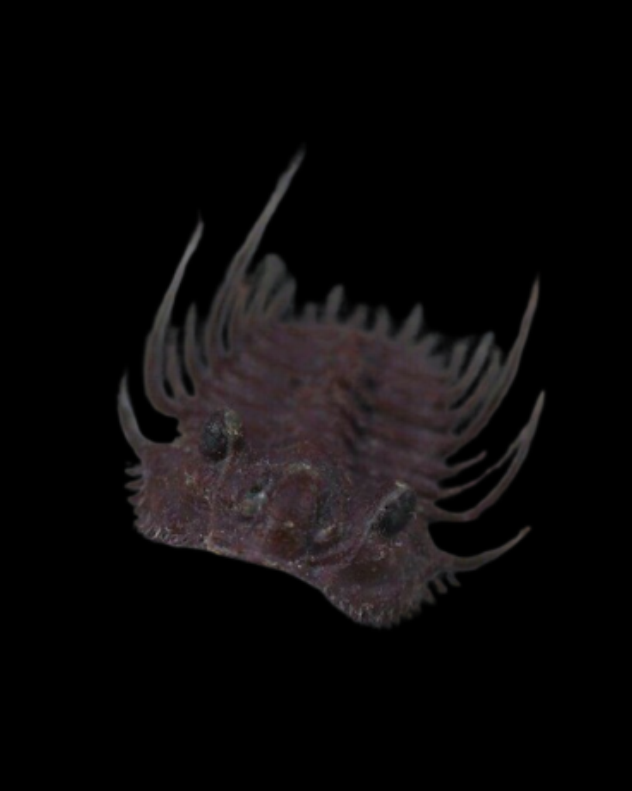
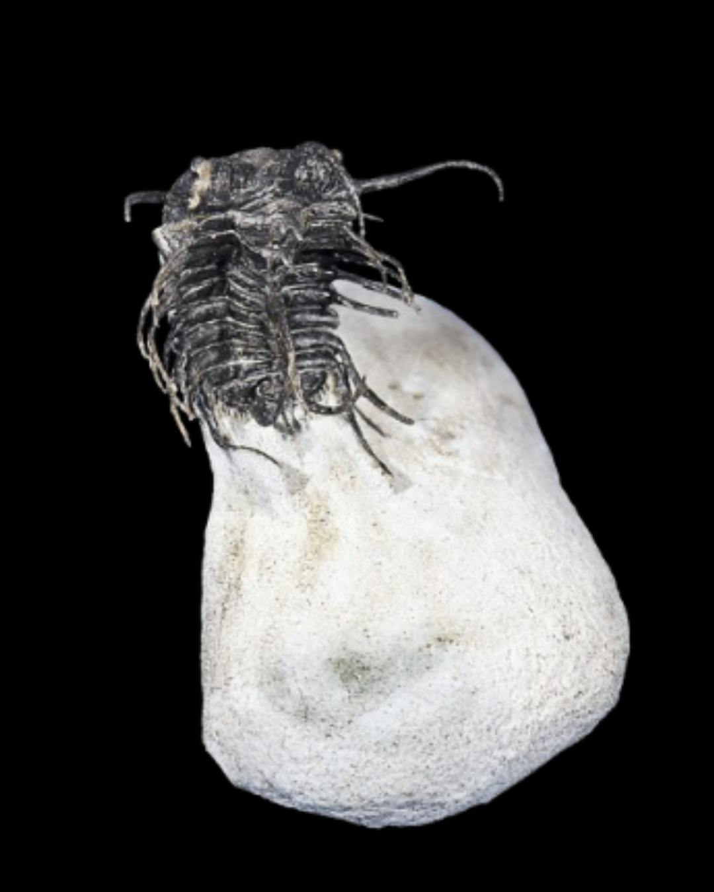
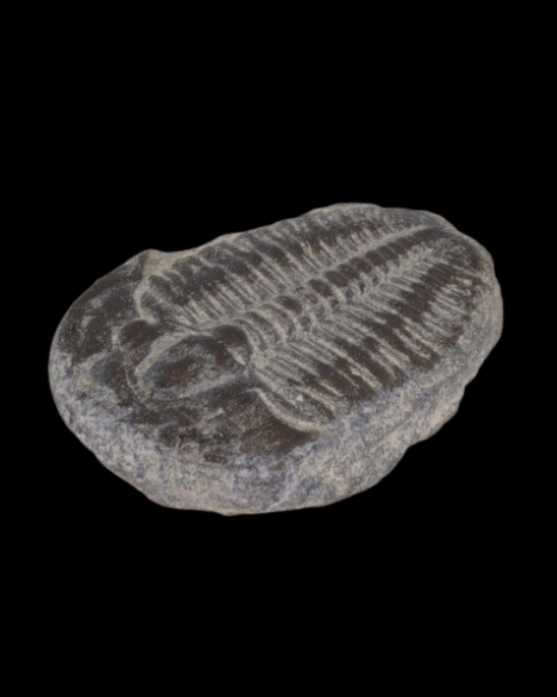
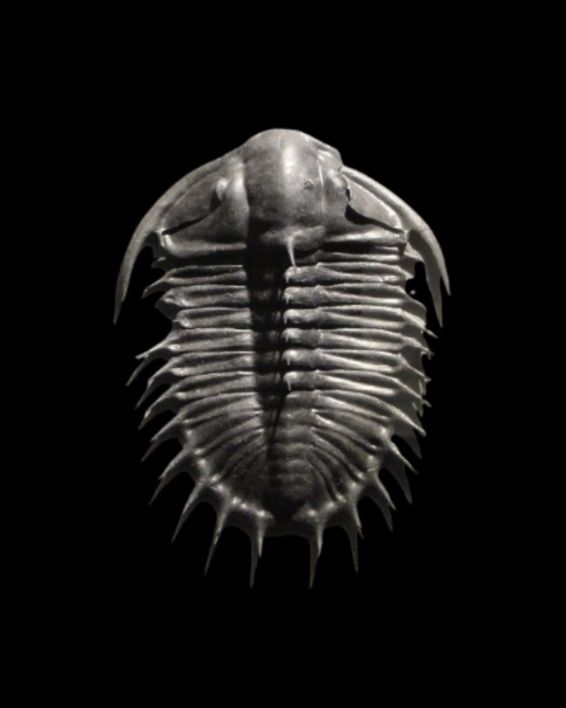

| Cámbrico | Ordovícico | Silúrico | Devónico | Carbonífero | Pérmico |
|---|---|---|---|---|---|
|
Aparecen los primeros trilobites, hace unos 521 millones de años atras,
en el primer periodo de la era paleozoica: el cámbrico, durante la
explosión cámbrica, el ascenso de los organismos multicelulares marinos y posteriormente los terrestres.
En el cámbrico inferior comenzó su diversificación, llegando a
registrar cerca de 22.000 especies de trilobites.
 |
Se alcanzó aquí la máxima diversidad de trilobites y se
desarrollaron en gran variedad morfológica, además de distribuirse
en todos los nichos ecológicos marinos. Implementaron mecanismos de supervivencia
como hacerse bolita o desarrollar cuerpos más planos y nadadores para tomar ventaja
sobre depredadores como los nautiloideos.
 |
Antes del silúrico ocurrió la extinción ordovícida-silúrica,
la primera, en orden cronólogico, de 5 grandes extinciones.
Este evento, ocasionado por glaciaciones y el descenso de la temperatura
global, hizo que el 85% de las especies se extinguieran, y generó un fuerte
impacto en los trilobites, quienes se recuperarían pero no volverían al
auge que tuvieron en el ordovícico.
 |
Aquí, los trilobites comienzan su lastimoso declive.
En el devónico tuvo lugar la siguiente extinción, la del devónico tardío.
Sumando la colonizacón terrestre de las primeras plantas (que provocó un descenso del CO2
y enfriamiento global), la falta de oxígeno en los mares y los cambios en sus
niveles y química, generó una pérdida del 70-75% de especies.
 |
Los trilobites no se extinguieron del todo después de la extinción
anteriormente menconada, pero sí se vieron reducidos en número
y características. Eran escasos los que sobrevivían, y cada vez les era más difícil ploriferar como antes. |
En el pérmico los últimos trilobites desaparecen en la mayor extinción
masiva de la historia: la extinción pérmico-triásica, conocida como la
gran mortandad, ocasionada por el vulcanismo extremo, calentamiento global,
acidificación de los mares y la destrucción de la capa de ozono.
Entre el 90-96% de las especies marinas y el 70% de las terrestres se
extinguieron.
Los trilobites ya estaban en declive desde el devónico; esta extinción solo
terminó con lo que ya había empezado, sin posibilidad de recuperarse como
en el silúrico, y los trilobites desaparecieron para ser solamente un recuerdo fósil de esta era de la Tierra.
 |